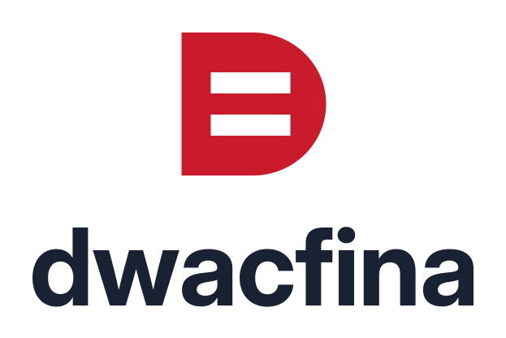

Dwacfina · usage du logo
Page d'usage, version 0.1, 18/11/2026. Logo « Partie double » : un D dont le vide est un signe égal.
1. Le logo

Quatre formes : en ligne (usage courant), en pile (espaces étroits et hauts), symbole seul (icônes, petites tailles, quand le nom est déjà écrit à côté), mot seul (quand le symbole est déjà présent). Les lettres basses du mot ont exactement la hauteur du signe égal ; l'écart entre symbole et mot vaut deux épaisseurs de barre.
2. Versions et fonds

Bicolore sur fond clair. Sur Bleu Nuit : symbole rouge et mot blanc, ou tout blanc. Noir pour les impressions en une couleur (fax, tampon, photocopie). La version blanche a des vides élargis d'une unité, car le blanc sur fond sombre paraît plus gras.
3. Couleurs
| Couleur | Hexa | RVB | CMJN (approché) |
|---|---|---|---|
| Rouge Écarlate | #C91B2C | 201, 27, 44 | 0 87 78 21 |
| Bleu Nuit | #182232 | 24, 34, 50 | 52 32 0 80 |
Les deux couleurs du guide de marque DWAC. Le CMJN est un calcul direct depuis le RVB : à confirmer chez l'imprimeur, avec la référence Pantone du guide DWAC si elle existe.
4. Zone de protection
Autour du logo, laisser vide au moins X, la hauteur du signe égal (de la barre du haut à celle du bas). Aucun texte, bord ou image dans cette zone.
5. Tailles minimales
| Forme | Écran | Impression |
|---|---|---|
| En ligne | 96 px de large | 25 mm de large |
| En pile | 64 px de large | 18 mm de large |
| Symbole | 16 px | 5 mm |
Sous 24 px, utiliser la coupe « petit » : barres et vide de 2 px exactement, pour que le signe égal ne se bouche pas. Icône du navigateur : web/favicon.svg et web/favicon.ico.
6. Typographie
Le mot est dessiné d'après Inter Display Bold, en bas de casse, approche resserrée de 1,2 %. Il est livré en tracés : aucune police n'est nécessaire pour l'afficher. Inter est sous licence SIL Open Font, qui permet l'usage dans un logo. Dans le logiciel, le texte garde la police du système (DESIGN.md).
7. À ne pas faire
Ne pas redessiner, ne pas ajouter de dégradé (le guide DWAC les interdit), ne pas recomposer le mot dans une autre police, ne pas écrire de slogan dans la zone de protection.
8. Fichiers
SVG maîtres : dwacfina-symbole-*, dwacfina-symbole-petit-*, dwacfina-en-ligne-*, dwacfina-en-pile-*, dwacfina-mot-*, dwacfina-icone-* (variantes couleur, rouge-blanc, blanc, nuit, noir).
PNG transparents : dossier png (512 et 1024 px pour symboles et icônes, 1200 px pour en ligne et mot, 800 px pour en pile).
Web : dossier web (favicon.ico 16, 32 et 48 px, favicon.svg, apple-touch-icon 180 px, icônes 192 et 512 px, site.webmanifest, head.html).